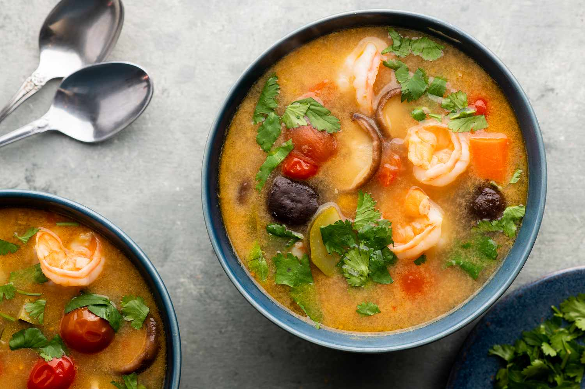

Tom Yum Goong

Description
Tom Yum Goong is a great way to warm up during cold seasons.
Ingredients
- 2 liters water
- 1 pack Tom Yum paste
- 2 stalks lemongrass, bruised and cut into 2 inch strips
- 3 cm galangal, cut into slices
- 5 kaffir lime leaves, torn
- 2 cloves garlic, crushed
- 5 chilies or more, crushed
- 1 cube seafood or chicken stock
- 400 gr shrimp, peeled and deveined
- 450 gr straw mushroom, cut into halves and rinsed. You can use oyster mushroom as well, or both.
- 2 tomatoes, cut into wedges
- 2 small onions, slice into strips
- 6-10 tbsp fish sauce (depending on your taste)
- 2 tsp sugar
- 8-10 tbsp lime or lemon juice
- A handful of cilantro, chopped
Steps
- In a pot, bring water to boil. Add in: tom yum paste, lemongrass, galangal, kaffir lime leaves, garlic, chilies and the cube stock. Cook for about 10 minutes to bring out the flavour of the spices with the lid on.
- Add in shrimps, mushrooms and onion. Cook for about 5 minutes. Skim the foam if any.
- Add in tomatoes then season with fish sauce and sugar. I started with adding 6 tbsp of fish sauce. You may add more to your taste.
- When the onions turn soft. Turn off the heat and season with lemon juice and sprinkle with chopped cilantro. You may adjust the seasoning by adding more fish sauce and/or lime juice.
- Ready to serve.